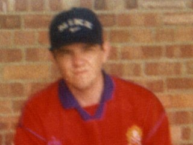

Fan In Focus

James Curran
Name: James Curran
Place of Birth: Rush Green, Romford
Date of Birth: 05/11/75
Occupation: Day Care assistant
Favourite Band: Space
Favourite Film: Die Hard
Favourite TV Programme: Kenan & Kel, Renford Rejects
1. FAVOURITE CURRENT PLAYER & WHY?
J.C. Mark Janney, he is so fast and
he shouldn't be wasted on the subs bench.
2. FAVOURITE PLAYER OF ALL TIME & WHY?
J.C. Ian Richardson, he used to play
for the team and not for himself. I was a bit upset when he left for Notts
County, but he seems to have done ok for himself.
3. BEST TEAM PERFORMANCE?
J.C. Umbro Trophy semi-final replay
against Gloucester City at Slough, and we went a goal down.
4. WORST TEAM PERFORMANCE?
J.C. A few to choose from, probably
away to St.Albans last season when we were beat 2-0. I still can't believe
Cobb was subbed off !!
5. BEST GOAL 1997/98 SEASON?
J.C. Danny Shipps scissor kick vs.
Southend in the Essex Senior Cup semi-final.
6. BEST GOAL OF ALL TIME?
J.C. John Stimson's superb shot in
the semi-final again versus Gloucester City. (His second one, I mean.)
7. MOST MEMORABLE MOMENT?
J.C. Arriving at the twin towers in
my Dagenham & Redbridge shirt. It was worth all of the stress.
8. MOST FORGETTABLE MOMENT?
J.C. Must be Tony Rogers being sent
off. .
9. BEST COMMENT HEARD FROM THE TERRACES
J.C. "Oi Shippy, you carthorse."
10. WHAT WOULD YOU DO TO THE CLUB TO IMPROVE IT?
J.C. Drainage, lower admission
prices for children, and veggie burgers.
11. DO YOU FOLLOW A FOOTBALL LEAGUE CLUB IF SO WHO?
J.C. None
12. WHAT OTHER QUESTION WOULD YOU LIKE TO SEE ON THIS QUESTIONAIRE?
J.C. What do you think of the press
coverage D & R recieve?
13. WHY DO YOU SUPPORT A NON-LEAGUE CLUB LIKE DAGENHAM &
REDBRIDGE F.C
J.C. It is more fun supporting a
local team because you get to know the supporters and the players, which
you can't really do in the Premiership.
14. FAVOURITE MATCH BEEN TO NOT INVOLVING THE DAGGERS?
J.C. Plymouth Argyle VS Exeter
15. FAVOURITE NON & FOOTBALL LEAGUE GROUND VISITED EXCLUDING
WEMBLEY?
J.C. Aldershots Rec, because of the
space behind the far goal.